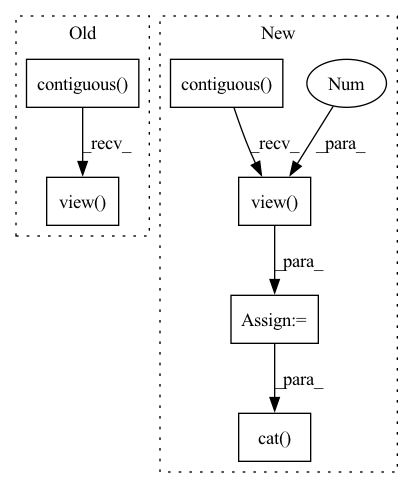

Pattern ID :26900

Before Change
interval = 16
idx = torch.arange(0,T,interval)
rpn_inputs = inputs[:,:,idx]
rpn_inputs = rpn_inputs.transpose(1,2).contiguous().view(N*(T//interval),C,H,W)
with torch.no_grad():
proposals = rpn(rpn_inputs)
proposals = proposals.view(N,T//interval,10,4)
outputs = model(inputs, proposals.detach())
After Change
interval = 16
// sample frames for RPN
sample = torch.arange(0,T,interval)
rpn_inputs = inputs[:,:,sample].transpose(1,2).contiguous()
rpn_inputs = rpn_inputs.view(-1,C,H,W)
if len(inputs) < max_N:
print("Modified from {} to {}".format(len(inputs), max_N))
rpn_inputs = torch.cat((rpn_inputs, rpn_inputs[:(max_N-len(inputs))*(T//interval)]))
with torch.no_grad():
proposals = rpn(rpn_inputs)
proposals = proposals.view(-1,T//interval,10,4)
if len(inputs) < max_N:
In pattern: SUPERPATTERN
Frequency: 3
Non-data size: 6
Instances
Fragment ID: 80247837
Project Name: jd730/strg
Commit Name: 439d8eb70d35c5cc16fdabda09a67e2149af8c8a
Time: 2020-06-12
Author: jdhwang730@gmail.com
File Name: training.py
M Class Name: AnonimousClass
N Class Name: AnonimousClass
M Method Name: train_epoch(12)
N Method Name: train_epoch(12)
M Parent Class:
N Parent Class:
M File Name: training.py
N File Name: training.py
M Start Line: 57
M End Line: 62
N Start Line: 50
N End Line: 76
'>
Before Change
x = self.dense_block(input)
x = self.bottleneck_conv2d(x)
x = x.squeeze(dim=1)
x = x.permute(0, 2, 1).contiguous()
x, _ = self.rnn(x)
x = self.linear(x)
x = x.view(batch_size, W, out_channels, H)
output = x.permute(0, 2, 3, 1).contiguous()
return output
After Change
x = self.dense_block(input)
x_rnn = self.bottleneck_conv2d(x)
x_rnn = x_rnn.squeeze(dim=1)
x_rnn = x_rnn.permute(0, 2, 1).contiguous()
x_rnn, _ = self.rnn(x_rnn)
x_rnn = self.linear(x_rnn)
x_rnn = x_rnn.view(batch_size, W, 1, H)
x_rnn = x_rnn.permute(0, 2, 3, 1).contiguous()
output = torch.cat([x, x_rnn], dim=1)
return output
class RNNBeforeDenseBlock(nn.Module):
'>
Fragment ID: 80247838
Project Name: tky823/dnn-based_source_separation
Commit Name: a03228ac5d881722942f5d3b8f51c12b05045f49
Time: 2021-10-18
Author: delta9guitar97@gmail.com
File Name: src/models/dense_rnn.py
M Class Name: RNNAfterDenseBlock
N Class Name: RNNAfterDenseBlock
M Method Name: forward(2)
N Method Name: forward(2)
M Parent Class: nn.Module
N Parent Class: nn.Module
M File Name: src/models/dense_rnn.py
N File Name: src/models/dense_rnn.py
M Start Line: 53
M End Line: 62
N Start Line: 57
N End Line: 66
'>
Before Change
interval = 16
idx = torch.arange(0,T,interval)
rpn_inputs = inputs[:,:,idx]
rpn_inputs = rpn_inputs.transpose(1,2).contiguous().view(N*(T//interval),C,H,W)
print(rpn_inputs.shape)
with torch.no_grad():
proposals = rpn(rpn_inputs)
proposals = proposals.view(N,T//interval,10,4)
After Change
interval = 16
// sample frames for RPN
idx = torch.arange(0,T,interval)
rpn_inputs = inputs[:,:,idx].transpose(1,2).contiguous()
rpn_inputs = rpn_inputs.view(-1,C,H,W)
if len(inputs) < max_N:
print("Modified from {} to {}".format(len(inputs), max_N))
rpn_inputs = torch.cat((rpn_inputs, rpn_inputs[:(max_N-len(inputs))*(T//interval)]))
with torch.no_grad():
proposals = rpn(rpn_inputs)
proposals = proposals.view(-1,T//interval,10,4)
if len(inputs) < max_N:
'>
Fragment ID: 80247839
Project Name: jd730/strg
Commit Name: b98d2a6a9e626ae8be88646109eca0d53f1f4af5
Time: 2020-06-12
Author: jdhwang730@gmail.com
File Name: validation.py
M Class Name: AnonimousClass
N Class Name: AnonimousClass
M Method Name: val_epoch(9)
N Method Name: val_epoch(9)
M Parent Class:
N Parent Class:
M File Name: validation.py
N File Name: validation.py
M Start Line: 40
M End Line: 49
N Start Line: 34
N End Line: 62